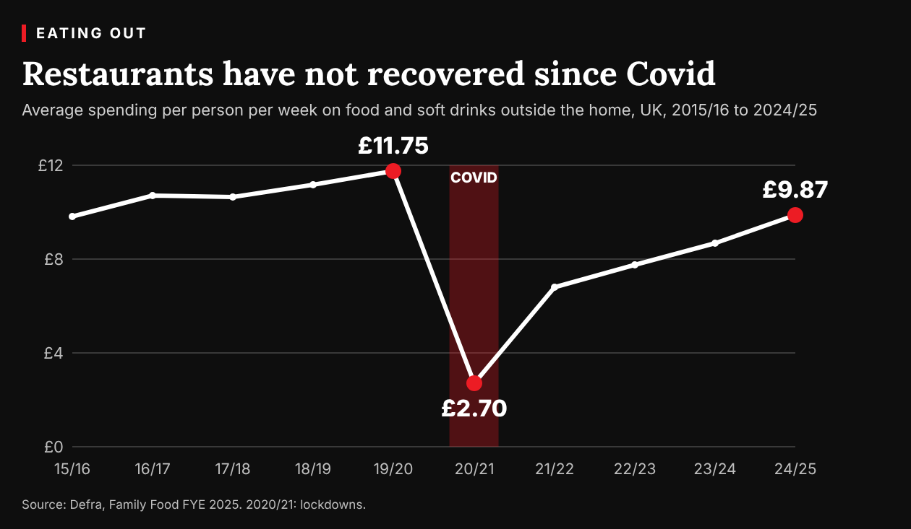

International - Analysis
Britain is paying almost a fifth more for the same food
British households spend almost 20% more on their food shopping than three years ago. But they do not buy more. Official data shows where the money went, and who feels it most.
From Soweto to Cape Town, many of us know the feeling: the trolley is the same, but the till slip is longer. In the United Kingdom, families have been living the same story since 2022, with what the British call the "cost-of-living crisis".
The UK government's Family Food survey asks around 5,000 households to write down everything they buy. It shows that the average person spent £28.23 a week on food and soft drinks for the home in 2021/22. In 2024/25, it was £33.63: an increase of 19.1% in three years.
But when inflation is removed, spending is almost the same: +0.5% only, according to the government's real-terms figures. British families are paying more, not eating more.
Where the money went
The chart below shows how much an average person spends each week on 14 food groups. 2024/25 is the most recent year in the official data, so every bar compares it with a starting year that you choose. Pick 2019/20 to see the change since before Covid, or 2021/22 to see the change since prices went up. You can also switch between percent and pence, and click on a bar to read the figures.
Eggs saw the biggest rise in the British food basket
Change in average spending per person per week on food for the home, UK, between the starting year and 2024/25 (latest data). In red: the four biggest rises.
Click on a bar to see the details.
Eggs are the clearest example: spending went from 31p to 53p a week per person between 2021/22 and 2024/25 (+73%). Fats and oils (+36%), potatoes (+29%) and fresh meat (+28%) come next. On the other side, spending on fish only rose by 7%, much less than the average of 19%. Compared with 2015/16, families spend 86% more on eggs. Compared with 2023/24, the rise has slowed down: spending on soft drinks even fell by 4%. Official inflation figures say the same thing: in September 2026, food prices in the UK were rising by 1.3% a year, the slowest pace since 2021.
Restaurants have not recovered
Covid changed the way the British eat. In 2019/20, the average person spent £11.75 a week on food and soft drinks outside the home: restaurants, takeaways, canteens. During the lockdowns of 2020/21, it fell to £2.70, a drop of 77%. The chart below shows this collapse and the slow recovery since.

Since then, it has gone up every year, to £9.87 in 2024/25. But even without counting inflation, it is still 16% lower than before Covid. For many families, eating out is one of the first things to go.
Not everyone is squeezed in the same way
In 2024/25, food took 10.9% of the average household's spending, but 15.2% for the poorest 20% of households. The poorest 10% spent £27.91 a week per person on food for the home, against £40.55 for the richest 10%. For eating out, the gap is even bigger: £5.19 against £16.99.
In South Africa, many families buy their daily food at the spaza, the small corner shop of the townships. Food prices are rising more slowly there too this year (1.6% in June 2026, according to Stats SA), but whether you shop at a spaza in Soweto or a supermarket in London, a rising food bill hits the smallest budgets first.
What it tells us
The British basket has not really changed, but it costs almost a fifth more. Basic products like eggs, fats and potatoes are behind the rise, restaurants are still below their pre-Covid level, and the poorest families spend a bigger part of their money on food. For South African readers, the story sounds familiar: food inflation is also a question of inequality.
Sources
- Family food datasets (Defra, FYE 2025): UK expenditure and income decile datasets.
- Family Food FYE 2025 report (Defra): real-terms figures and share of spending on food.
- Consumer price inflation, UK: September 2026 (Office for National Statistics): food price inflation in the UK.
- Inflation rises to a two-year high (Statistics South Africa): food inflation in South Africa, June 2026.